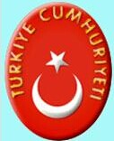
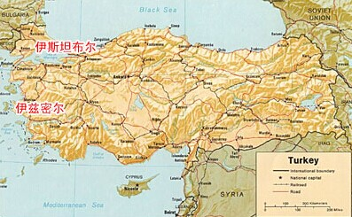

- 土耳其国旗
- 土耳其国徽
- 土耳其标志性建筑
- 土耳其地理位置
土耳其概况
土耳其是一个横跨欧亚两洲的国家，面积783,562平方公里。
人口概况
8069.4万（2013年7月），土耳其族占80%以上，库尔德族约占15%；城市人口为4970多万，占总人口的70.5%。土耳其语为国语。99%的居民信奉伊斯兰教，其中85%属逊尼派，其余为什叶派（阿拉维派）；1%的人信仰基督教和犹太教。
土耳其经济
土耳其属发展中经济, 私有和公有经济成分并存, 主要以农业和制造业为基础。虽然国民生产总值增长快于人口增长, 但人均国民生产总值仍低于欧洲国家。
外交关系
外交重心在西方, 在与美国保持传统战略伙伴关系的同时加强与欧洲国家的关系。土耳其1987年申请加入欧盟, 直至1999年才获得候选国资格。加入欧盟是土既定战略目标, 已与欧盟实现关税同盟。注重经济外交, 维护自身利益。主张以和平方式解决国家间争端。在人权、民主、塞浦路斯等问题上与西方国家分歧较大。
经贸往来
根据2010年温家宝总理访问土耳其期间与土总理埃尔多安达成的共识，2012年在土举办中国文化年，2013年在中国举办土耳其文化年。2011年12月12日，国家主席胡锦涛和土总统居尔就两国互办文化年暨“2012年土耳其中国文化年”在安卡拉开幕致信表示热烈祝贺。
2011年，中土双边贸易额187亿美元，同比增长24.0%，其中我出口156亿美元，增长30.8%，进口31亿美元，下降1.4%。2012年1至9月，双边贸易额142.3亿美元，其中我出口116.2亿美元，进口26.1亿美元。两国经贸合作持续发展，交通、电力、冶金、电信是双方合作的重点。
农产品和工业产品在主要出口商品中大致各占一半。主要出口贸易伙伴有德国、意大利和美国。伊拉克的石油是主要进口货物。德国为土耳其提供了大量进口机器和设备。
产业：纺织、食品加工、汽车、电子、矿业（煤、铬、铜、硼）、钢铁、石油、建筑、木材、造纸。
出口：电力、服装、食品、纺织品、金属制品、运输设备。
进口：电力、机械、石油、化学制品、半成品、燃料、运输设备。